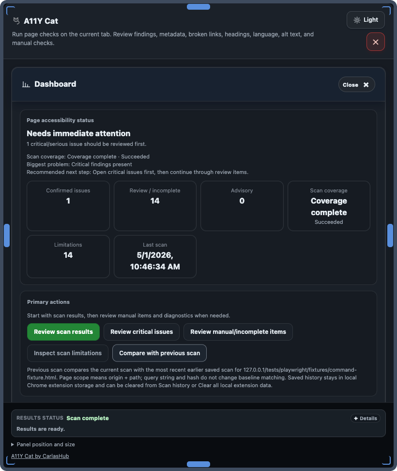

History and comparison
Previous scan and history
Previous scan comparison is scope-bound and local. This page documents matching and retention behavior.

Matching logic
Previous scan comparison matches scans by origin + pathname scope. Query strings and hash fragments are ignored for scope matching.
Retained history and archive
Local history stores recent scan snapshots and archive entries used for scoped comparison and trend review. History is retained in local extension storage only.
Comparison behavior
- If no previous scan exists for the same scope, comparison is unavailable.
- No unrelated-scan fallback is used.
- Clearing local data removes history used by comparison.
User actions
- Run scan in the target page state.
- Open previous scan comparison for scoped delta view.
- Export evidence when needed for handoff.